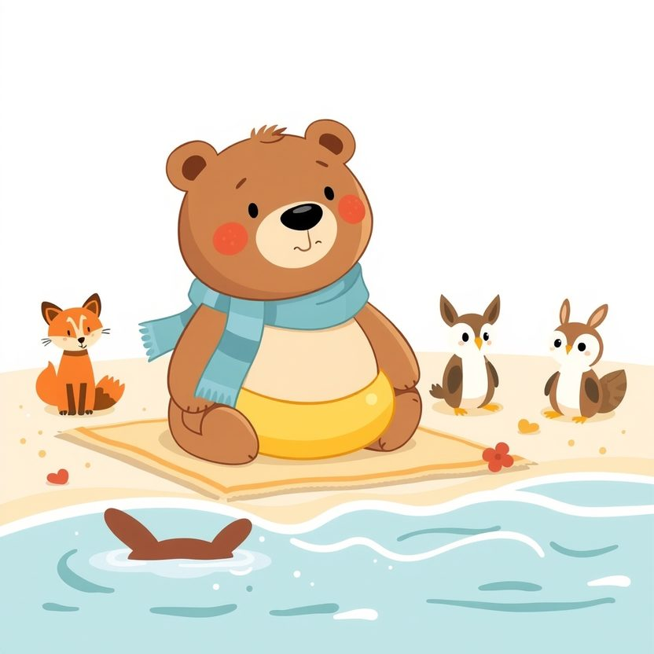

Titistoire › Les Étoiles (3-6 ans)
Nestor et la bouée jaune
Une histoire de Nestor l'ourson pour parler de : apprendre pas à pas.

▶ Écouter et regarder l'histoire
Gratuit, sans inscription : la voix lit, le texte suit mot à mot, les images tournent comme dans un album.
Le texte de l'histoire
À la plage des Dunes, tous les amis de Nestor sont à l'eau. Filou plonge, Rosie fait la planche, Plume barbote au bord. Nestor, lui, reste assis sur sa serviette, sa grosse bouée jaune autour du ventre.
« Viens, Nestor ! Elle est bonne ! » « Hmm… tout à l'heure. Je digère. » Il a mangé il y a trois heures.
La vérité, c'est que Nestor a peur de l'eau. Elle remue sans arrêt, elle est profonde, et l'on ne voit pas ce qui se cache dessous. Et puis un ourson, ça coule à pic, il en est certain.
Il s'approche quand même du bord et trempe un orteil. Brr, c'est froid ! Une vaguelette accourt, pas plus haute qu'une crêpe. Nestor bondit dix pas en arrière.
« Tu n'as qu'à sauter d'un coup ! lui crie Filou. Comme moi ! » « Ferme les yeux et cours ! » ajoute Rosie. Nestor essaie de courir. Au bord de l'eau, ses pattes se figent toutes seules, comme devant un mur.
Il retourne s'asseoir, les épaules basses. Là-bas, ses amis rient dans les vagues. Lui se sent très gros, très lourd, et très seul sur sa serviette.
« Elle te fait peur, hein ? » C'est Monsieur Otto, le phoque maître-nageur, coiffé de son bonnet rouge. Nestor baisse le nez. « Un peu. Beaucoup. Les autres n'ont pas peur, eux. »
« Tu veux que je te confie un secret ? Quand j'étais petit, je refusais de mettre la tête sous l'eau. Un phoque ! Ma mère en avait honte. » « Et alors ? » « Alors j'ai appris. Une moustache à la fois. »
« La mer, on ne saute pas dedans d'un coup. On fait connaissance. Viens. Aujourd'hui, on ne mouille que les pieds. Et c'est tout. »
Que les pieds ? Ça, Nestor veut bien. Cramponné à la nageoire de Monsieur Otto, il avance dans l'eau jusqu'aux chevilles. Les vaguelettes lui chatouillent les orteils. Il glousse.
« C'est tout pour aujourd'hui », décide le phoque. « Déjà ? » « Déjà. Demain, les genoux. » Nestor regagne sa serviette, le menton haut. Il n'a mouillé que ses pieds, mais le voilà fier comme s'il avait traversé l'océan.
Le lendemain : les genoux. Le jour d'après : le ventre. La bouée jaune flotte autour de lui comme un gros canard.
Le quatrième jour, Monsieur Otto annonce : « Aujourd'hui, on fait des bulles. » Nestor trempe le menton. Puis la bouche. Blblblblb ! Ça glougloute comme une bouilloire.
Soudain, une vague lui passe par-dessus le nez. Il tousse, il crache. Son cœur s'emballe. « Je veux sortir ! » « On sort, répond tranquillement Monsieur Otto. On reviendra quand tu voudras. »
Nestor s'assoit sur le sable, le nez qui pique. Il s'attend à avoir trop peur pour y retourner. Mais au bout de cinq minutes, il se relève tout seul, les sourcils froncés. « Hmm… Encore des bulles. »
Le sixième jour, Monsieur Otto lui enseigne l'étoile. « Sur le dos, les pattes écartées, et tu laisses la mer te porter. » Nestor s'étale sur l'eau, tout raide. « Elle ne voudra jamais de moi. Je suis trop lourd. »
« La mer porte des baleines, mon grand. » Nestor s'allonge. Les nageoires du phoque le soutiennent. L'eau lui bouche les oreilles. Il ne voit plus que le ciel, tout bleu, avec une mouette dedans.
« Je te lâche ? » « … Oui. » Les nageoires se retirent. Et Nestor flotte. Tout seul. Comme une grosse étoile de mer poilue. Abandonnée sur le sable, la bouée jaune le regarde.
Le dernier jour des vacances, Monsieur Otto recule de trois pas dans l'eau. « Viens jusqu'à moi. Comme tu veux. » Nestor gonfle ses poumons. Il pousse sur ses pattes.
Il pédale, il éclabousse, il boit un peu la tasse. Ce n'est pas très élégant. Mais il avance. Une brasse. Deux. Cinq ! Il agrippe la nageoire du phoque. « J'ai nagé ! »
Sur la plage, ses amis hurlent de joie. « NESTOR ! NESTOR ! » Filou fait la roue. Rosie trépigne : « Cinq brasses ! Je les ai comptées ! »
L'après-midi, Nestor batifole dans les vagues avec les autres. Pas trop loin. Là où il a pied. Mais dedans. Et quand un rouleau le renverse, il se relève en riant, de l'eau plein les oreilles.
Sur le sable, un tout petit lapin fixe la mer en serrant sa serviette contre lui. C'est Pompon. Nestor sort de l'eau et vient s'asseoir près de lui, tout ruisselant.
« Elle te fait peur, hein ? Moi aussi, avant. Tiens. » Il lui passe la grosse bouée jaune autour du ventre. « Aujourd'hui, on ne mouille que les pieds. Et c'est tout. »